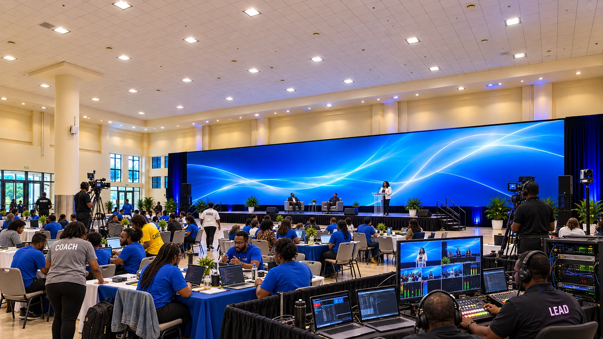

MONTEGO BAY CONVENTION CENTRE
Choose your venue tour
Start with the new AI 360° event views, explore the original venue photographs, or review the separate CAD concept.
AI concept · Photorealistic 360°
Picture the event in 360°
Explore ten full-circle views, from the coding halls and registration foyer to rest, dining and meeting spaces. See proposed event activity, then look up, down and around each room.
Open Photorealistic 360° Tour →
Generated event concepts based on historic venue photography. Includes two new equipment-and-people stills. Room fit and final layouts remain unverified.

Historic venue photography
Original Venue Tour
Look around the convention centre through its original 360° photographs. Explore 25 viewpoints across seven venue categories.
Open Original Venue Tour →
Open standalone venue explorer
AI concept · Interactive 3D
AI Concept Tour
Explore nine concept spaces, including both exhibition halls with their original CAD table layouts. Look around the proposed event zones and compare their original photography and AI styling previews.
Open AI Concept Tour →
AI illustrations are not an as-built record, an approved layout or proof that equipment fits.